pdf svg
| 紅外線感測 |
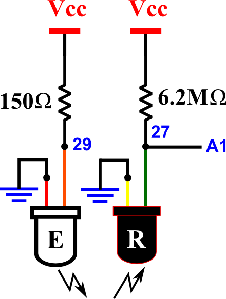 pdf svg |
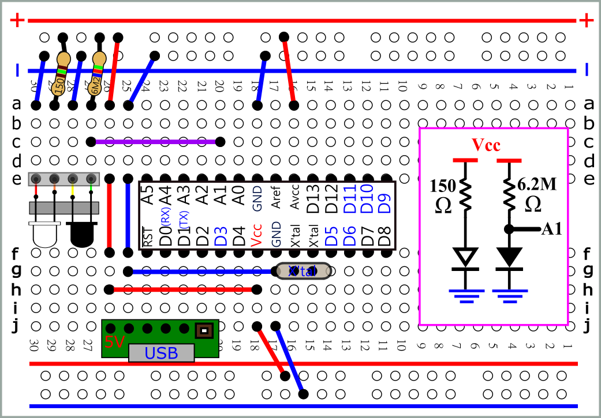 pdf svg |
| int
val; void setup() { Serial.begin(9600); } void loop() { val=analogRead(A1); Serial.println(val); delay(1000); } //套上小黑套 |
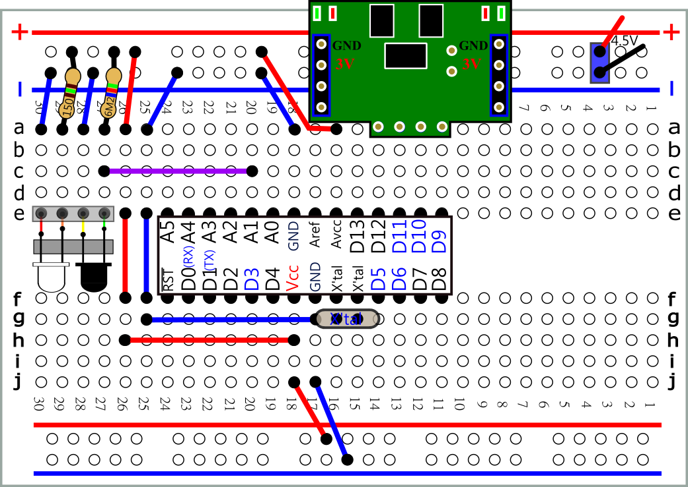 pdf svg |
pdf svg |
| #define
DirR 12 #define DirL 11 #define PwmL 9 #define PwmR 10 #define irin A1 int val; void setup() { pinMode( DirL , OUTPUT); pinMode( DirR , OUTPUT); pinMode( PwmL , OUTPUT); pinMode( PwmR , OUTPUT); digitalWrite(PwmL,LOW); digitalWrite(PwmR,LOW); } void loop() { val=analogRead(irin); if(val>800) { digitalWrite(DirL,HIGH); digitalWrite(DirR,HIGH); digitalWrite(PwmL,HIGH); digitalWrite(PwmR,HIGH); } else { digitalWrite(DirL,LOW); digitalWrite(DirR,LOW); digitalWrite(PwmL,HIGH); digitalWrite(PwmR,HIGH); } } |
 |
| 討論: 前進與後退的程式碼 |
| #define
DirR 12 #define DirL 11 #define PwmL 9 #define PwmR 10 #define irin A1 int val; void setup() { pinMode( DirL , OUTPUT); pinMode( DirR , OUTPUT); pinMode( PwmL , OUTPUT); pinMode( PwmR , OUTPUT); digitalWrite(PwmL,LOW); digitalWrite(PwmR,LOW); } void loop() { val=analogRead(irin); if(val>800) { digitalWrite(DirL,HIGH); digitalWrite(DirR,HIGH); digitalWrite(PwmL,HIGH); digitalWrite(PwmR,HIGH); } else if(val<500) { digitalWrite(DirL,LOW); digitalWrite(DirR,LOW); digitalWrite(PwmL,HIGH); digitalWrite(PwmR,HIGH); } else { digitalWrite(PwmL,LOW); digitalWrite(PwmR,LOW); } } |
 |
| 沿桌邊走 |
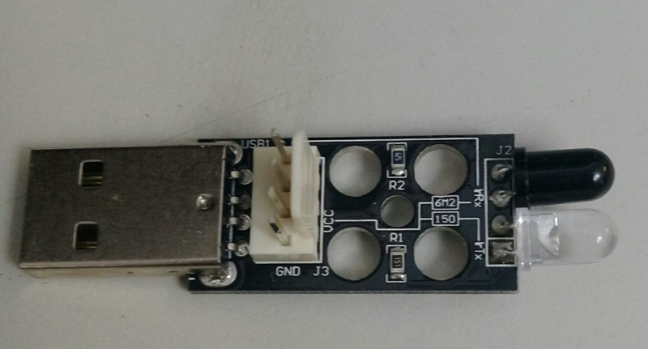 |
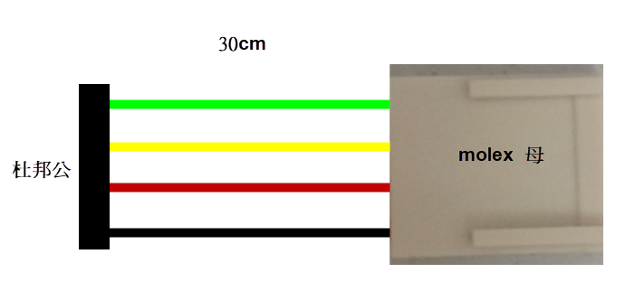 5mm 黑色熱縮套 |
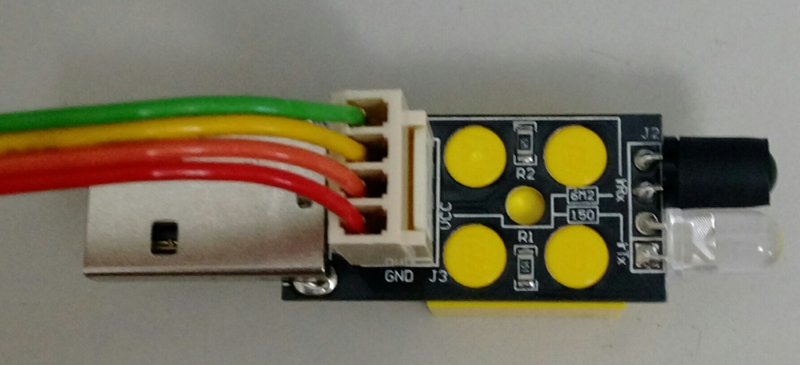 |
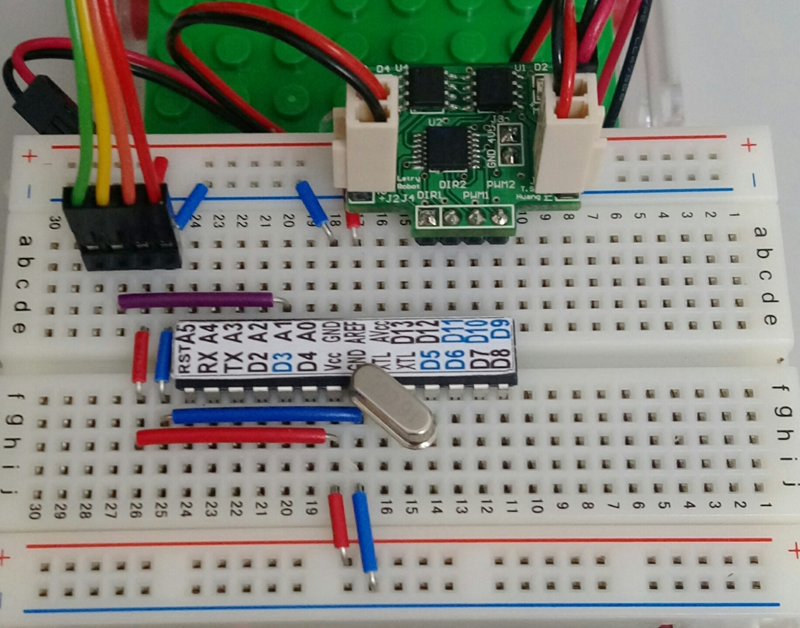 |
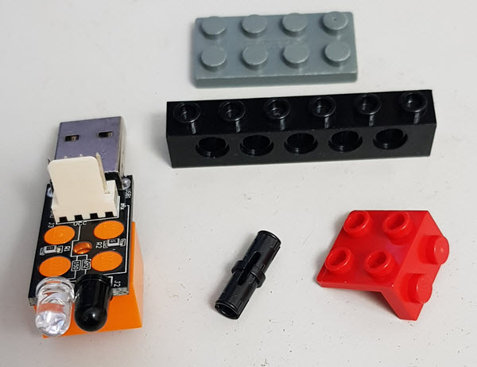 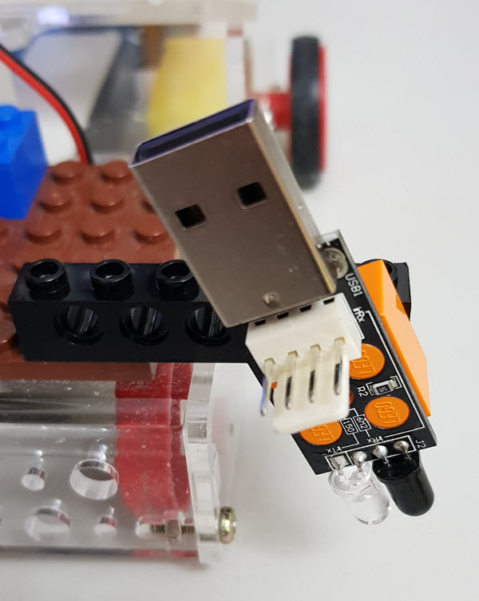 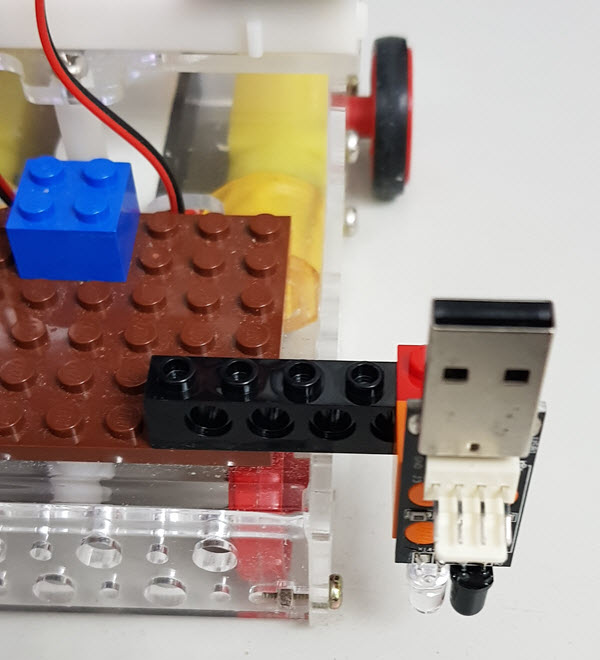 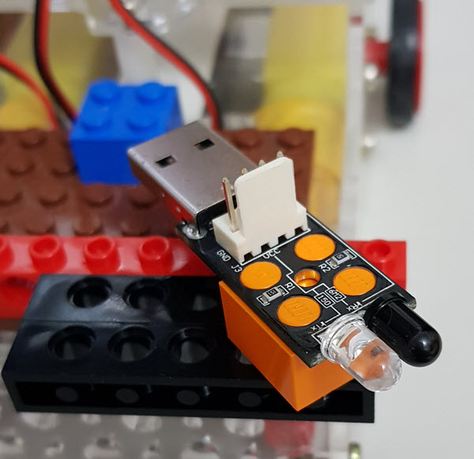 |
| #define
irin A1 int val; int dval; void setup() { Serial.begin(9600); } void loop() { val=analogRead(irin); dval=digitalRead(irin); Serial.print("val="); Serial.print(val); Serial.print(" dval="); Serial.println(dval); delay(1000); } //套上小黑套 |
| #define
irin A1 #define led 8 int val; int dval; void setup() { Serial.begin(9600); pinMode(led,OUTPUT); } void loop() { val=analogRead(irin); dval=digitalRead(irin); if(dval==HIGH) digitalWrite(led,HIGH); else digitalWrite(led,LOW); Serial.print("val="); Serial.print(val); Serial.print(" dval="); Serial.println(dval); delay(1000); } //套上小黑套 |
| 順
時針 感測器 放左邊 沒收到信號(HIGH) 右轉 收到信號 (LOW) 直走 |
| #define
DirR 12 #define DirL 11 #define PwmL 9 #define PwmR 10 #define irin A1 int val; void setup() { pinMode( DirL , OUTPUT); pinMode( DirR , OUTPUT); pinMode( irin , INPUT); analogWrite(PwmL,0); analogWrite(PwmR,0); digitalWrite(DirL,HIGH); digitalWrite(DirR,HIGH); } void loop() { val=digitalRead(irin); if(val==HIGH) { analogWrite(PwmL,150); analogWrite(PwmR,0); } else {//調整數值 直走或稍微向左偏 analogWrite(PwmL,150); analogWrite(PwmR,150); } } |
| 逆
時針 感測器 放右邊 沒收到信號(HIGH) 左轉 收到信號 (LOW) 直走 |
| #define
DirR 12 #define DirL 11 #define PwmL 9 #define PwmR 10 #define irin A1 int val; void setup() { pinMode( DirL , OUTPUT); pinMode( DirR , OUTPUT); pinMode( irin , INPUT); analogWrite(PwmL,0); analogWrite(PwmR,0); digitalWrite(DirL,HIGH); digitalWrite(DirR,HIGH); } void loop() { val=digitalRead(irin); if(val==HIGH) { analogWrite(PwmL,0); analogWrite(PwmR,150); } else { analogWrite(PwmL,150); analogWrite(PwmR,150); } } |
| 順
時針 感測器 放左邊 沒收到信號(HIGH) 右轉 收到信號 (LOW) 左轉 |
| #define
DirR 12 #define DirL 11 #define PwmL 9 #define PwmR 10 #define irin A1 int val; void setup() { pinMode( DirL , OUTPUT); pinMode( DirR , OUTPUT); pinMode( irin , INPUT); analogWrite(PwmL,0); analogWrite(PwmR,0); digitalWrite(DirL,HIGH); digitalWrite(DirR,HIGH); } void loop() { val=digitalRead(irin); if(val==HIGH) { analogWrite(PwmL,150); analogWrite(PwmR,0); } else { analogWrite(PwmL,0); analogWrite(PwmR,150); } } |
| 逆
時針 感測器 放右邊 沒收到信號(HIGH) 左轉 收到信號 (LOW) 右轉 |
| #define
DirR 12 #define DirL 11 #define PwmL 9 #define PwmR 10 #define irin A1 int val; void setup() { pinMode( DirL , OUTPUT); pinMode( DirR , OUTPUT); pinMode( irin , INPUT); analogWrite(PwmL,0); analogWrite(PwmR,0); digitalWrite(DirL,HIGH); digitalWrite(DirR,HIGH); } void loop() { val=digitalRead(irin); if(val==HIGH) { analogWrite(PwmL,0); analogWrite(PwmR,150); } else { analogWrite(PwmL,150); analogWrite(PwmR,0); } } |
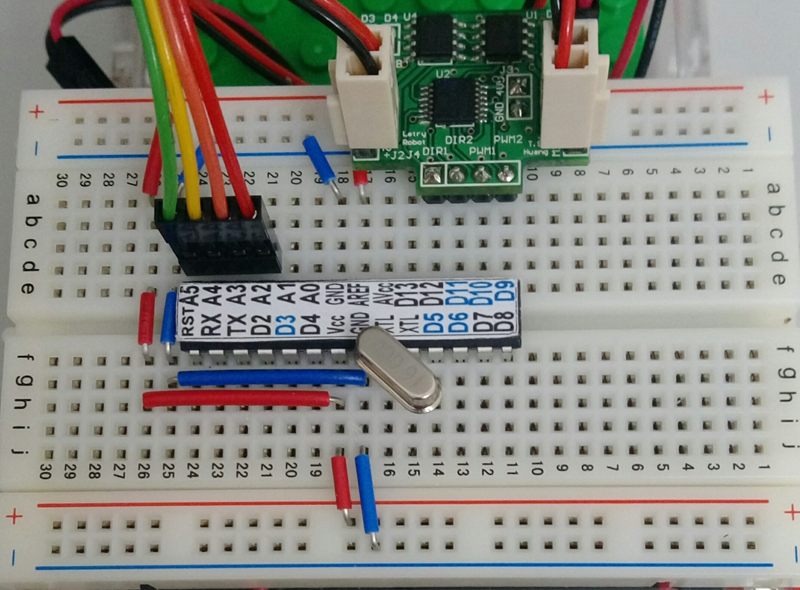 |
| #define
irin A4 int val; int dval; void setup() { pinMode(A2,OUTPUT); pinMode(A3,OUTPUT); digitalWrite(A2,LOW); digitalWrite(A3,HIGH); Serial.begin(9600); } void loop() { val=analogRead(irin); dval=digitalRead(irin); Serial.print("val="); Serial.print(val); Serial.print(" dval="); Serial.println(dval); delay(1000); } |
| 雙功能 D7 -->GND 前後 D7-->Vcc 沿桌邊順時針走 切換模式後 重新上電 |
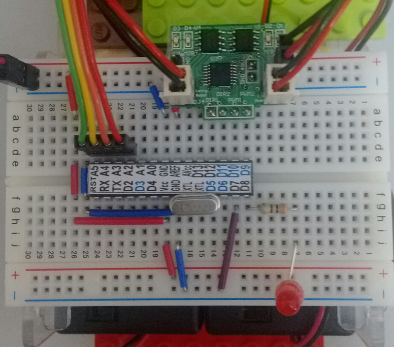 |
| #define
DirR 12 #define DirL 11 #define PwmL 9 #define PwmR 10 #define irin A4 #define GND A2 #define VCC A3 #define LED 8 #define modePin 7 int val; int mode; void setup() { pinMode( DirL , OUTPUT); pinMode( DirR , OUTPUT); pinMode( GND , OUTPUT); pinMode( VCC , OUTPUT); pinMode( LED , OUTPUT); pinMode( irin , INPUT); pinMode( modePin , INPUT); digitalWrite(GND,LOW); digitalWrite(VCC,HIGH); analogWrite(PwmL,0); analogWrite(PwmR,0); digitalWrite(DirL,HIGH); digitalWrite(DirR,HIGH); mode=digitalRead(modePin); } void loop() { val=digitalRead(irin); if(mode==HIGH){ //D7接Vcc if(val==HIGH) { digitalWrite(LED,HIGH); analogWrite(PwmL,150); analogWrite(PwmR,0); } else {digitalWrite(LED,LOW); analogWrite(PwmL,0); analogWrite(PwmR,150); } } if(mode==LOW){ //D7 接地 前後 analogWrite(PwmL,150); analogWrite(PwmR,150); if(val==HIGH) { digitalWrite(LED,HIGH); digitalWrite(DirL,HIGH); digitalWrite(DirR,HIGH); } else {digitalWrite(LED,LOW); digitalWrite(DirL,LOW); digitalWrite(DirR,LOW); } } } |
| 圍在黑色圈內 |
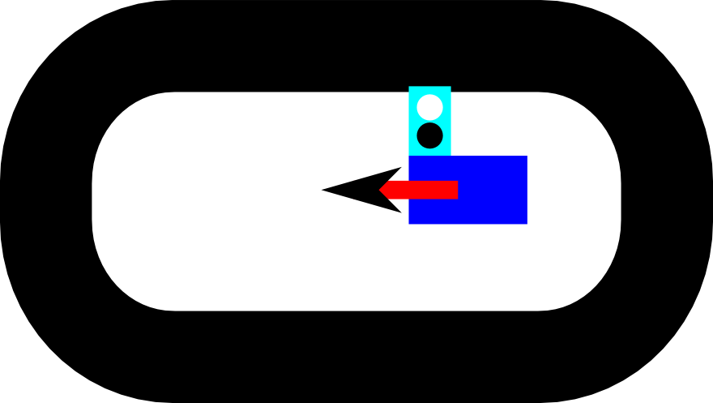 |
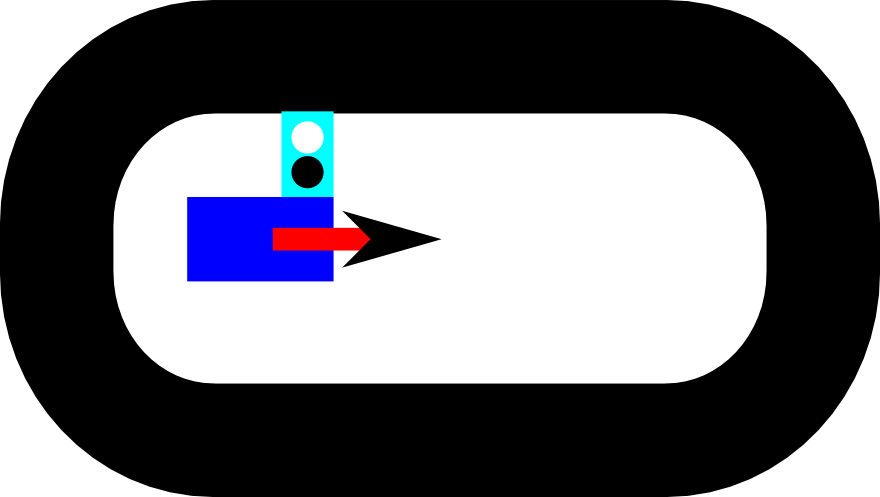 |
| 沿黑線走 |
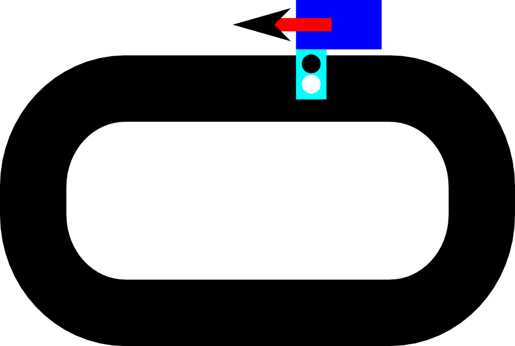 |
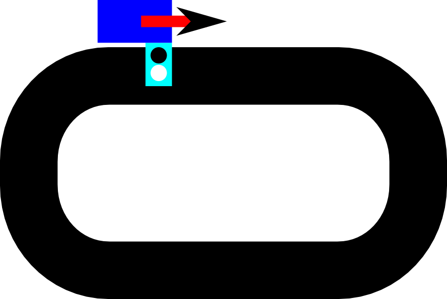 svg |
svg |
| LM393 比較器 (pdf) |
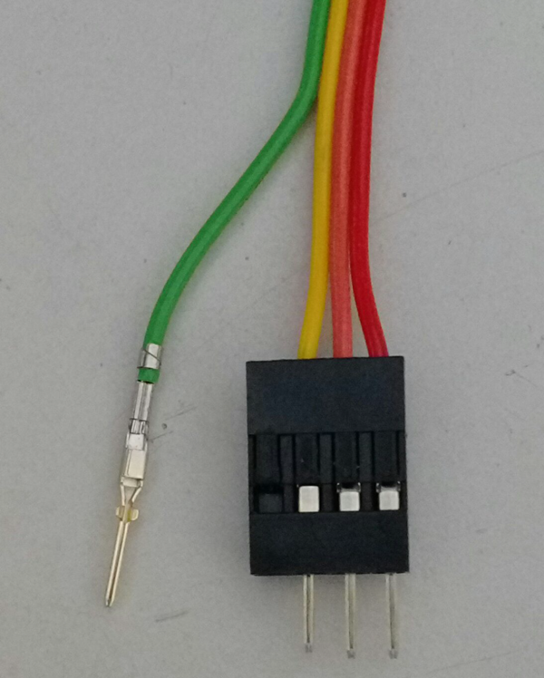 |
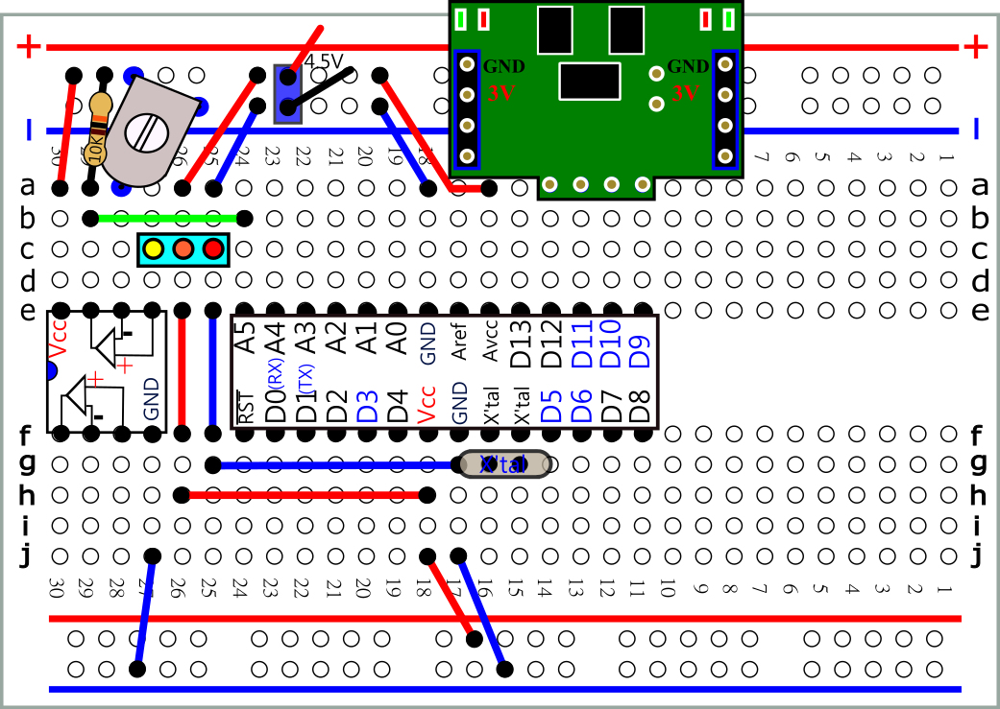 pdf svg |
| 遇牆轉彎 |
| #define irin A1 #define DirR 12 #define DirL 11 #define PwmL 9 #define PwmR 10 int val; void setup() { // Serial.begin(9600); pinMode( DirL , OUTPUT); pinMode( DirR , OUTPUT); pinMode( PwmL , OUTPUT); pinMode( PwmR , OUTPUT); digitalWrite(PwmL,0); digitalWrite(PwmR,0); digitalWrite(DirL,1); digitalWrite(DirR,1); } void loop() { val=analogRead(irin); // Serial.println(val); if(val>500) { digitalWrite(DirL,1); digitalWrite(PwmL,1); digitalWrite(PwmR,1); } else { digitalWrite(DirL,0); digitalWrite(PwmL,1); digitalWrite(PwmR,1); delay(700); } } |
| 成功? |
| 消除雜訊 |
| #define irin A1 #define DirR 12 #define DirL 11 #define PwmL 9 #define PwmR 10 int val; void setup() { //Serial.begin(9600); pinMode( DirL , OUTPUT); pinMode( DirR , OUTPUT); pinMode( PwmL , OUTPUT); pinMode( PwmR , OUTPUT); digitalWrite(PwmL,1); digitalWrite(PwmR,1); digitalWrite(DirL,1); digitalWrite(DirR,1); } void loop() { val=analogRead(irin); val=val+analogRead(irin); val=val+analogRead(irin); val=val+analogRead(irin); val=val/4; //Serial.println(val); if(val>500) { digitalWrite(DirL,1); } else { digitalWrite(DirL,0); delay(700); } } |
| //使用for 迴圈 #define irin A1 #define DirR 12 #define DirL 11 #define PwmL 9 #define PwmR 10 #define n 3 int val; void setup() { Serial.begin(9600); pinMode( DirL , OUTPUT); pinMode( DirR , OUTPUT); pinMode( PwmL , OUTPUT); pinMode( PwmR , OUTPUT); digitalWrite(PwmL,1); digitalWrite(PwmR,1); digitalWrite(DirL,1); digitalWrite(DirR,1); } void loop() { val=analogRead(irin); for (int i=0;i<n;i++) {val=val+analogRead(irin);} val=val/(n+1); Serial.println(val); if(val>500) { digitalWrite(DirL,1); } else { digitalWrite(DirL,0); delay(700); } } |
| //使用移動平均法(moving average) #define irin A1 #define DirR 12 #define DirL 11 #define PwmL 9 #define PwmR 10 #define n 5 int ind = 0; int sum = 0; int avg = 0; int val[n]; void setup() { //Serial.begin(9600); pinMode( DirL , OUTPUT); pinMode( DirR , OUTPUT); pinMode( PwmL , OUTPUT); pinMode( PwmR , OUTPUT); digitalWrite(PwmL,1); digitalWrite(PwmR,1); digitalWrite(DirL,1); digitalWrite(DirR,1); delay(1000); for(int i=0;i<n;i++) { val[i]=analogRead(irin); sum=sum+val[i]; } } void loop() { sum=sum-val[ind]; val[ind]=analogRead(irin); sum=sum+val[ind]; ind++; if (ind>=n) ind=0; avg=sum/n; //Serial.println(avg); if(avg>500) { digitalWrite(DirL,1); } else { digitalWrite(DirL,0); delay(700); } } |
| 使用 digitalRead |
| #define irin A1 #define DirR 12 #define DirL 11 #define PwmL 9 #define PwmR 10 #define n 20 int val; void setup() { //Serial.begin(9600); pinMode( DirL , OUTPUT); pinMode( DirR , OUTPUT); pinMode( PwmL , OUTPUT); pinMode( PwmR , OUTPUT); digitalWrite(PwmL,1); digitalWrite(PwmR,1); digitalWrite(DirL,1); digitalWrite(DirR,1); } void loop() { val=digitalRead(irin); for (int i=0;i<n;i++) {val=val+digitalRead(irin);} //Serial.println(val); if(val==0) { digitalWrite(DirL,0); delay(700); } else { digitalWrite(DirL,1); } } |